Правила сбора биоматериала
Волосы
Основные правила
1. Необходимо вымыть и высушить волосы.
2. Нельзя наносить на волосы средства для укладки.
3. Последнее окрашивание или обесцвечивание волос должно проводиться не позже чем за 2 месяца до анализа.
4. За 14 дней до анализа желательно прекратить использование средств против перхоти, муссов, бальзамов и лечебных шампуней.
Завивка, в том числе и химическим способом,не препятствует проведению анализа волос.
5. За 3 месяца до анализа нужно прекратить использование препаратов типа «Антиседин».
6. Волосы для анализа необходимо остричь возле корней в 4—5 местах на затылке ближе к шее. Рекомендуется оставить образцы длиной 3—5 см от корней, а лишнее обрезать и выбросить. Если волосы очень короткие, их необходимо состричь в таком количестве, чтобы заполнить чайную ложку. Перед процедурой следует тщательно вымыть руки и протереть режущую поверхность ножниц.
7. Образцы волос нужно собрать в пучок толщиной 2—3 мм и положить в маленький конверт, пометив участок конверта, где находится корневой конец пряди, надписью «корень».
8. Если волосы на голове отсутствуют, их следует собрать с любой другой части тела, сделав соответствующую пометку на конверте.
Ногти
Основные правила
1. Ногти должны быть сухими и чистыми.
2. За 7 дней до сдачи анализа необходимо прекратить использовать лак для ногтей и другие средства по уходу, нельзя обрабатывать ногти металлической пилкой.
3. Ногти (не менее 2 мм) следует срезать со всех пальцев обеих рук и ног. Перед процедурой необходимо тщательно вымыть руки и протереть режущую поверхность ножниц.
4. Образцы ногтей с указанием источника рекомендуется поместить в разные конверты.
Ногти собирают для анализа в том случае, когда предоставить на исследование волосы по каким-то причинам невозможно.
Алюминий
В организме человека алюминий является следовым элементом. Его концентрация в различных тканях и органах очень низкая. Так, желудочно-кишечный тракт практически непроницаем для данного элемента: всасывание составляет не более 2% от всего количества поступающего алюминия. Остальной алюминий образует малорастворимые комплексы (в основном с фосфатами пищи).
Поступивший в кровь алюминий выводится с мочой. Нарушение функции почек приводит к накоплению данного элемента в организме.
Результаты исследования
Нормальное количество алюминия при анализе волос – до 40 мкг/г, при исследовании ногтей – до 80 мкг/г.
Повышенный показатель
Повышение количества алюминия в анализе наблюдается при:
• повышенном поступлении алюминия в организм;
• нарушении минерального обмена в организме;
• наличии внешних источников загрязнения.
Барий
В организме человека барий является следовым элементом – он содержится преимущественно в костях в небольшом количестве. Токсичность этого элемента зависит от формы соединения. Так, сульфат бария малотоксичен, он используется в медицине как рентгеноконтрастное вещество.
Что касается других соединений, например хлорида бария, то они очень токсичны. При отравлении подобными солями у человека появляются такие симптомы, как затрудненное дыхание, повышение давления, нарушение сердечного ритма, отек мозга, а также поражение печени, почек, селезенки и сердца.
Барий, вдыхаемый с производственной пылью, может накапливаться в легких и вызывать тяжелые заболевания.
Результаты исследования
Нормальный показатель бария при анализе волос и ногтей – до 6 мкг/г.
Повышенный показатель
Повышенное содержание в анализе наблюдается при избыточном поступлении бария в организм в результате неблагоприятной экологической обстановки или специфики трудовой деятельности обследуемого.
Бериллий
Какой-либо физиологической роли этого токсичного металла в организме человека не выявлено. В быту опасности токсического воздействия бериллия практически нет, поскольку его содержание в пище и воде небольшое, а от всего поступающего количества данного элемента всасывается не более 1%.
Воздействию бериллия подвергаются только те люди, что живут поблизости от промышленных объектов, связанных с процессами обогащения металлов, а также трудятся на предприятиях атомной, космической, электронной промышленности.
Отравление бериллием происходит при вдыхании промышленных газов и пыли, содержащих повышенную концентрацию этого элемента.
При этом бериллий выводится из организма очень медленно (иногда в течение нескольких лет).
Хроническое отравление бериллием может привести к бериллиозу, а также к кожным заболеваниям.
Многие врачи придерживаются мнения, что отравление бериллием может привести к развитию рака легких.
Результаты исследования
Нормальное содержание бериллия при анализе волос и ногтей – до 0,1 мкг/г.
Повышенный показатель
Повышенное количество бериллия в анализе наблюдается при его избыточном поступлении в организм в результате неблагоприятной экологической обстановки или специфики трудовой деятельности обследуемого.
Бор
Бор относится к условно необходимым для человека элементам. Источником бора является питьевая вода и пища растительного происхождения.
Соединения бора используют в качестве консервантов, антисептических агентов и фунгицидов.
Избыточное поступление бора в организм может вызвать отравление, симптомами которого являются нарушение аппетита и желудочно-кишечные расстройства.
Повышенное поступление бора в организм наблюдается у людей, занятых на производстве по добыче и переработке бора.
Результаты исследования
Нормальный показатель бора при анализе волос и ногтей – до 0,5 мкг/г.
Повышенный показатель
Повышенное содержание бора в анализе наблюдается при:
• проживании человека в областях с высоким содержанием бора в почве и воде;
• приеме медицинских препаратов с высоким содержанием бора;
• приеме пищи с повышенным содержанием бора;
• нарушениях минерального обмена в организме.
Ванадий
Физиологическая роль данного элемента изучена плохо. Считается, что он участвует в процессах регуляции углеводного обмена.
В организм человека ванадий поступает с пищей, кроме того, он входит в состав некоторых пищевых добавок.
Избыточное поступление ванадия в организм связано, как правило, с воздействием промышленных факторов, а также с употреблением рыбы и морепродуктов, поступивших из районов, расположенных рядом с нефтяными скважинами.
Вдыхание производственной пыли с высоким содержанием ванадия может вызвать бронхит, повреждение дыхательных путей и поражение слизистой оболочки глаз. Избыточное поступление данного элемента в желудочно-кишечный тракт приводит к диарее и поражению почек.
Ванадий содержится в растительном масле, сое, хлебных злаках, морепродуктах, печени, жирном мясе, грибах, а также в петрушке и укропе.
Результаты исследования
Нормальное содержание ванадия при анализе волос и ногтей – до 0,5 мкг/г (до 17 лет) и до 0,3 мкг/г (старше 17 лет).
Повышенный показатель
Повышенный показатель ванадия в анализе наблюдается при:
• влиянии промышленных факторов;
• избыточном поступлении ванадия с пищей.
Висмут
Висмут относится к малотоксичным следовым элементам, которые не являются жизненно необходимыми. В организм человека он поступает с водой и пищей. Кроме того, источниками висмута являются губная помада, пигменты керамики и стекла, некоторые медикаменты. Отравление происходит только при длительном воздействии данного элемента на организм. Как правило, токсическому воздействию подвергаются только люди, занятые в производстве косметики, дезинфектантов и пигментов.
Симптомами хронической интоксикации являются слабость, повышение температуры тела, ухудшение аппетита, боли ревматического характера, поражение почек, затрудненное дыхание, диарея, изменения костной ткани. Одним из главных признаков отравления висмутом является черная кайма на деснах.
Содержание висмута в волосах и ногтях не всегда показывает степень его токсического воздействия на организм.
Результаты исследования
Нормальное количество висмута при анализе волос и ногтей – до 0,1 мкг/г (до 17 лет) и до 0,2 мкг/г (старше 17 лет).
Повышенный показатель
Повышенный показатель висмута в анализе наблюдается при влиянии промышленных факторов.
Вольфрам
Данный элемент используется в промышленности для производства нитей накаливания электрических лампочек, в рентгеновских и вакуумных трубках, в нагревательных элементах, а также в ракетной технике. При продолжительном воздействии производственной пыли и паров, содержащих соединения вольфрама, может наблюдаться отравление.
Результаты исследования
Нормальное содержание вольфрама при анализе волос и ногтей – до 0,2 мкг/г.
Повышенный показатель
Повышенное количество вольфрама в анализе наблюдается при влиянии промышленных факторов.
Галлий
Галлий является редким элементом и присутствует в организме человека в следовом количестве. В промышленности его используют при производстве высокотемпературных термометров и полупроводников. Некоторые соединения галлия применяются в медицине.
При избыточном поступлении галлия в организм наблюдаются расстройство нервной системы, тошнота, рвота, а также задержка роста (у детей).
Результаты исследования
Нормальное количество галлия при анализе волос и ногтей – до 0,3 мкг/г.
Повышенный показатель
Повышенное содержание в анализе наблюдается при избыточном поступлении галлия в организм.
Германий
Германий не является жизненно необходимым элементом. В организм человека он поступает с пищей, равномерно распределяется в органах и тканях и выводится с мочой. В промышленности германий используется при производстве полиэтилена, электронных приборов, а также волоконной и инфракрасной оптики. Симптомами отравления германием являются почечная недостаточность, анемия и мышечная слабость.
Германий содержится в рыбе,отрубях, чесноке, грибах, овощах и корне женьшеня.
Результаты исследования
Нормальное содержание германия при анализе волос и ногтей – до 0,02 мкг/г.
Повышенный показатель
Повышенное содержание германия в анализе наблюдается при:
• воздействии промышленных факторов;
• нарушении минерального обмена в организме.
Железо
Железо относится к жизненно важным элементам. Оно входит в структуру гемоглобина. Метаболизм железа нарушается при беременности, активном росте, различных эндокринных, воспалительных, инфекционных и опухолевых заболеваниях, глистных инвазиях, кровотечениях.
Результаты исследования
Нормальные показатели железа в анализе волос и ногтей приведены в таблицах 77 и 78.
Таблица 77
Нормальные показатели железа в анализе волос
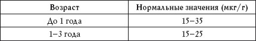
Таблица 78
Нормальные показатели железа в анализе ногтей
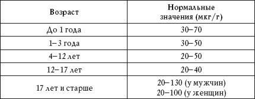
Повышенный показатель
Повышенное содержание железа в анализе волос и ногтей наблюдается при:
• нарушении баланса железа в организме;
• некоторых заболеваниях печени и селезенки (повышение уровня в анализе волос);
• алкоголизме (повышение уровня в анализе волос);
• воздействии промышленных факторов.
Пониженный показатель
Пониженное количество железа в анализе волос и ногтей наблюдается при:
• нарушении баланса железа в организме;
• воспалительных заболеваниях кишечника.
Золото
Золото является следовым элементом в организме человека, хотя считается, что оно проявляет биологическую активность в отношении определенных ферментов. Около 50% поступающего в организм золота концентрируется в костях. Металлическое золото используется в космической и электронной промышленности, в приборостроении, ювелирном деле. В медицине его применяют в терапии ревматоидного артрита и в стоматологии.
Результаты исследования
Нормальное содержание золота при анализе волос и ногтей – до 0,5 мкг/г.
Повышенный показатель
Повышенное количество золота в анализе волос и ногтей наблюдается при:
• лечении препаратами золота;
• избыточном поступлении золота в организм.
Йод
Этот элемент является жизненно необходимым. Он входит в состав гормонов Т3 и Т4. Дефицит йода приводит в болезням щитовидной железы, нарушению роста и развития (у детей), невынашиванию беременности.
В высоких концентрациях йод присутствует в морепродуктах и морской воде. Как недостаток, так и избыток йода отрицательно сказывается на здоровье человека.
Результаты исследования
Нормальное количество йода при анализе волос и ногтей – 0,3-10 мкг/г.
Повышенный показатель
Повышенное содержание йода в анализе волос и ногтей наблюдается при:
• избыточном поступлении йода с пищей;
• заболеваниях щитовидной железы;
• нарушении обмена йода в организме;
• внешнем воздействии.
Пониженный показатель
Пониженное количество йода в анализе волос и ногтей наблюдается при:
• недостаточном поступлении йода с пищей;
• заболеваниях щитовидной железы;
• нарушении обмена йода в организме.
Кадмий
Кадмий относится к токсичным следовым элементам. Его избыточное поступление в организм вызывает отравление, случаи которого, как правило, бывают связаны с промышленными загрязнениями.
При попадании в почву промышленных отходов, содержащих кадмий, данный элемент накапливается в злаках и зеленных овощах. Однако основным источником поступления кадмия в организм является сигаретный дым. Именно поэтому у курящих людей содержание данного элемента в организме намного выше, чем у некурящих.
Результаты исследования
Нормальное содержание кадмия при анализе волос и ногтей приведено в таблице 79.
Таблица 79
Нормальные показатели кадмия при анализе волос и ногтей
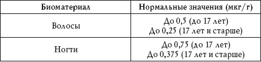
Повышенный показатель
Повышенное количество кадмия в анализе волос и ногтей наблюдается при:
• курении;
• избыточном поступлении кадмия в организм, связанном с промышленным загрязнением воды и почвы.
Калий
Калий относится к жизненно необходимым элементам, поскольку участвует в функционировании всех клеток организма человека. Большое количество этого элемента содержится в мясных и молочных продуктах, фруктах, овощах, какао и черном чае.
Результаты исследования
Нормальное содержание калия в анализе волос и ногтей приведены в таблицах 80 и 81.
Таблица 80
Нормальные показатели калия в анализе волос
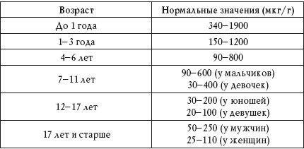
Таблица 81
Нормальные показатели калия в анализе ногтей
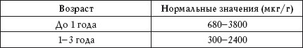
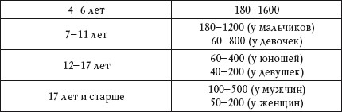
Повышенный показатель
Повышенное содержание калия в анализе волос наблюдается при:
• избыточном поступлении калия в организм;
• нарушении обмена калия в организме;
• целиакии;
• кистозном фиброзе;
• гипертонии;
• сахарном диабете;
• дистонии;
• патологии мышечной ткани.
Повышенный показатель калия в анализе ногтей наблюдается при:
• избыточном поступлении калия в организм;
• нарушении обмена калия в организме.
Пониженный показатель
Пониженное количество калия в анализе волос и ногтей наблюдается при:
• хроническом алкоголизме;
• физическом и психическом переутомлении;
• нарушении обмена веществ в организме;
• изменении баланса электролитов.
Кальций
Кальций – это один из важнейших макроэлементов организма человека. Он участвует во многих жизненно важных процессах, входит в структуру костной ткани.
Содержание кальция в волосах и ногтях не связано напрямую с уровнем потребления этого элемента и колеблется в широких пределах, однако определение уровня кальция в данных биоматериалах помогает распознавать многие патологические состояния организма.
Результаты исследования
Нормальное содержание кальция в анализе волос и ногтей приведено в таблицах 82 и 83.
Таблица 82
Нормальные показатели кальция в анализе волос
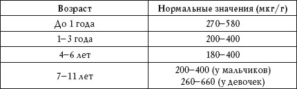
Таблица 83
Нормальные показатели кальция в анализе ногтей
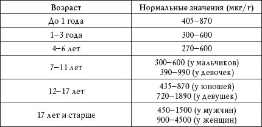
Повышенный показатель
Повышенное количество кальция в анализе волос и ногтей наблюдается при:
• избыточном поступлении кальция в организм;
• мобилизации кальция из костей, связанной с остеопорозом;
• нарушении обмена веществ в организме;
• приеме некоторых лекарственных препаратов;
• воздействии средств по уходу за ногтями и волосами.
Пониженный показатель
Пониженное содержание кальция в анализе волос и ногтей наблюдается при:
• недостаточном поступлении кальция в организм, связанном с нарушением режима питания или голоданием;
• активном росте;
• приеме некоторых лекарственных препаратов;
• инфаркте миокарда, сопровождающемся повышением кальцификации аорты.
Кобальт
Кобальт относится к жизненно важным микроэлементам, поскольку является компонентом витамина В12, необходимого для синтеза ДНК, функционирования нервной системы и многих других процессов, в том числе и кроветворения. В организм человека кобальт поступает с продуктами питания. Избыточное поступление этого элемента, как правило, связано с процессами производства его сплавов.
Результаты исследования
Нормальное содержание кобальта при анализе волос и ногтей – 0,01-0,5 мкг/г.
Повышенный показатель
Повышенное количество кобальта в анализе волос и ногтей наблюдается при:
• работе с тяжелыми металлами;
• приеме препаратов кобальта;
• употреблении большого количества пива, в состав стабилизаторов которого входит кобальт;
• разрушении содержащих кобальт ортопедических имплантатов.
Кремний
Этот элемент относится к условно необходимым. В организме человека кремний присутствует в небольших количествах. Его физиологическая роль до конца не выяснена.
Считается, что он участвует в механизмах синтеза коллагена и минерализации матрикса костной ткани. Даже при избыточном поступлении в организм кремний хорошо выводится с мочой. Задержка его выведения наблюдается только у людей, страдающих нарушениями функций почек. Кремний широко используется в пищевой, фармацевтической и медицинской промышленности. Вдыхание пыли, содержащей частицы кремния, может вызвать изменение ткани легких.
Метилированные полимеры кремния (силикон) используются в имплантатах.
Результаты исследования
Нормальное содержание кремния в анализе волос и ногтей приведено в таблицах 84 и 85.
Таблица 84
Нормальные показатели кремния в анализе волос
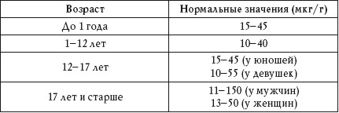
Таблица 85
Нормальные показатели кремния в анализе ногтей
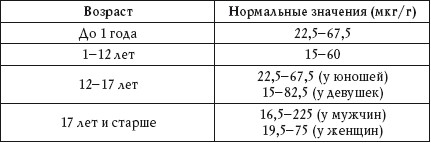
Повышенный показатель
Повышенное количество кремния в анализе волос и ногтей наблюдается при:
• избыточном поступлении кремния в организм;
• снижении выведения кремния из-за нарушения функций почек.
Литий
Небольшое количество лития присутствует во всех тканях организма. При поступлении в организм он всасывается почти полностью и выводится с мочой. В медицине препараты лития используются для лечения маниакальных расстройств. При избыточном поступлении лития в организм наблюдаются слабость, апатия, повышенная утомляемость, потеря аппетита, тошнота, летаргия, истончение и выпадение волос. Тяжелая интоксикация приводит к мышечной ригидности, эпилептическим припадкам и гиперактивности глубоких сухожильных рефлексов.
Длительный прием препаратов лития способствует повышению его содержания в волосах и ногтях.
Результаты исследования
Нормальное количество лития при анализе волос и ногтей – до 0,01 мкг/г.
Повышенный показатель
Повышенное содержание в анализе наблюдается при избыточном поступлении лития в организм.
Пониженный показатель
Пониженное количество лития в анализе наблюдается при:
• недостаточном поступлении лития в организм;
• хроническом алкоголизме;
• изменения минерального обмена в организме.
Магний
Магний относится к одним из самых важных элементов в организме человека, поскольку активность многих ферментов и процессов, связанных с ними, зависит именно от магния. Он содержится в костной и мышечной ткани.
В организм магний поступает с водой, растительной пищей и поваренной солью.
Прием большого количества магнезиальной соли не вызывает отравления – это вещество действует как слабительное. Симптомы интоксикации (вялость и сонливость) наблюдаются только при парентеральном введении большого количества сульфата магния.
Результаты исследования
Нормальное содержание магния в анализе волос и ногтей приведены в таблицах 86 и 87.
Таблица 86
Нормальные показатели магния в анализе волос
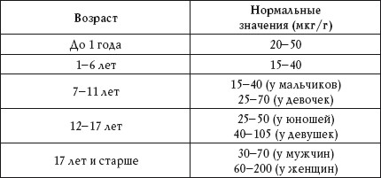
Таблица 87
Нормальные показатели магния в анализе ногтей
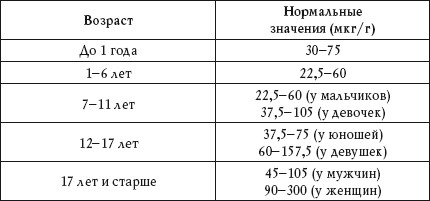
Повышенный показатель
Повышенное количество магния в анализе волос наблюдается при:
• избыточном поступлении магния;
• дисбалансе магния в организме;
• гиперфункции околощитовидных желез и щитовидной железы;
• почечнокаменной болезни;
• артрите;
• псориазе.
Повышенное содержание магния в анализе ногтей наблюдается при:
• избыточном поступлении магния;
• дисбалансе магния в организме.
Повышенная потребность в магнии отмечается при хроническом алкоголизме.
Пониженный показатель
Пониженное количество магния в анализе волос и ногтей наблюдается при:
• дефиците поступления магния в организм вследствие болезней желудочно-кишечного тракта или нарушений питания;
• дисбалансе магния вследствие длительного приема антибиотиков, мочегонных и противоопухолевых препаратов;
• нарушениях баланса минералов, обусловленных избыточным поступлением кобальта, свинца, кадмия, никеля и марганца;
• синдроме гиперактивности у детей.
Марганец
Марганец является жизненно важным элементом. Он входит в состав металлоферментов, а также действует как неспецифический активатор ферментов. Марганец участвует в процессах образования костей и соединительной ткани, в механизме роста, он влияет на репродуктивные функции и метаболизм жиров и углеводов.
Результаты исследования
Нормальное содержание марганца в анализе волос и ногтей приведено в таблицах 88 и 89.
Таблица 88
Нормальные показатели марганца в анализе волос
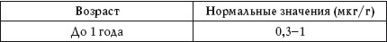
Таблица 89
Нормальные показатели марганца в анализе ногтей
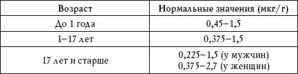
Повышенный показатель
Повышенное количество марганца в анализе волос и ногтей наблюдается при профессиональных воздействиях.
Пониженный показатель
Пониженное количество марганца в анализе волос и ногтей наблюдается при сахарном диабете.
Молибден
Молибден является жизненно необходимым элементом. Он входит в состав определенных металлоферментов, которые участвуют в процессах метаболизма. В организм человека молибден поступает с пищей в виде молибдатов. Его наибольшее содержание отмечено в орехах, горохе, фасоли, сое, а также в различных крупах.
Результаты исследования
Нормальный показатель молибдена при анализе волос – 0,02-0,2 мкг/г, при анализе ногтей – до 0,03-0,3 мкг/г.
Повышенный показатель
Повышенное количество молибдена наблюдается при:
• избыточном поступлении молибдена в организм с водой, пищей и пищевыми добавками;
• влиянии производственных факторов.
Пониженный показатель
Пониженное содержание молибдена наблюдается при:
• несбалансированной диете;
• парентеральном питании.
Мышьяк
Мышьяк является одним из самых токсичных элементов. При этом токсичностью обладают только неорганические соединения мышьяка.
Органические формы данного элемента присутствуют в различных продуктах питания, в основном в морепродуктах. Соединения мышьяка используются в медицине.
Результаты исследования
Нормальное количество мышьяка при анализе волос – до 1 мкг/г, при анализе ногтей – до 1,5 мкг/г.
Повышенный показатель
Повышенное содержание мышьяка в анализе волос и ногтей наблюдается при избыточном поступлении данного элемента в организм.
Натрий
Натрий является важным внеклеточным катионом. Он участвует в поддержании нормального уровня артериального давления и регуляции распределения воды в организме. Основной источник поступления натрия в организм – поваренная соль.
Результаты исследования
Нормальное количество натрия в анализе волос и ногтей приведено в таблицах 90 и 91.
Таблица 90
Нормальные показатели натрия в анализе волос
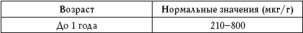
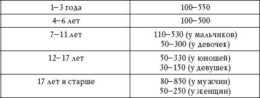
Таблица 91
Нормальные показатели натрия в анализе ногтей
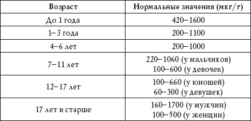
Повышенный показатель
Повышенное содержание натрия в анализе волос и ногтей наблюдается при:
• дисбалансе электролитов;
• нарушении функции почек;
• муковисцидозе;
• воздействии морской воды и некоторых моющих средств.
Пониженный показатель
Пониженное количество натрия в анализе волос и ногтей наблюдается при:
• дисбалансе электролитов;
• стрессе;
• несбалансированной диете;
• воздействии на волосы и ногти некоторых гигиенических и косметических средств.
Никель
Никель входит в структуру некоторых белков, РНК, ДНК, однако проявления его дефицита в организме человека не описаны. Известно только о токсическом и канцерогенном действии никеля при избыточном его поступлении в организм. Данный элемент используют в производстве магнитов, нержавеющей стали, керамики, эмалей, стекла, чернил, красок, ювелирных изделий и монет.
У 10-15% населения Земли наблюдается аллергия на никель.
Результаты исследования
Нормальное содержание никеля при анализе волос – до 2 мкг/г, при анализе ногтей – до 3 мкг/г.
Повышенный показатель
Повышенное количество никеля в анализе волос и ногтей наблюдается при избыточном поступлении данного элемента в организм, обусловленном бытовыми или производственными факторами.
Олово
Олово считается потенциально токсичным элементом.
Токсичные органические соединения олова присутствуют в каучуковых красках, инсектицидах, антигельминтных препаратах и поливиниловом пластике. Симптомами отравления органическим оловом являются головные боли, мышечная слабость, усталость, головокружение.
Отравление органическим оловом может привести к поражению почек и иммунной системы.
Металлическое олово широко используют в производстве фольги, канистр, консервных банок. Вдыхание пыли, которая содержит металлическое олово, может вызвать заболевание легких.
Результаты исследования
Нормальное содержание олова при анализе волос – до 2,5 мкг/г, при анализе ногтей – до 3,75 мкг/г.
Повышенный показатель
Повышенное количество олова в анализе волос и ногтей наблюдается при:
• производственных воздействиях олова;
• избыточном поступлении олова в организм с пищей.
Платина
Высокую токсичность проявляют только сложные соли платины, которые используются в медицине для химиотерапии при онкологических заболеваниях. Побочными результатами применения подобных препаратов являются нарушение функций желудочно-кишечного тракта, печени и системы кроветворения. Кроме того, соли платины могут вызвать аллергические реакции.
Результаты исследования
Нормальное содержание платины при анализе волос и ногтей – до 0,05 мгк/г.
Повышенный показатель
Повышенное количество платины в анализе волос и ногтей наблюдается при избыточном поступлении платины в организм.
Ртуть
Ртуть присутствует в организме человека в следовых количествах. Этот элемент обладает выраженными токсическими свойствами, однако его используют при производстве хлора и щелочей, а также в фармацевтической и электротехнической промышленности.
Результаты исследования
Нормальное содержание ртути при анализе волос и ногтей – до 2 мкг/г.
Повышенный показатель
Повышенное количество ртути в анализе волос и ногтей наблюдается при:
• влиянии производственных факторов;
• приеме препаратов ртути в медицинских целях;
• отравлении ртутью.
Свинец
Свинец является тяжелым металлом и обладает токсическими свойствами, однако он широко используется в быту и на производстве. Избыточное поступление свинца в организм может вызвать отравление.
Результаты исследования
Нормальное содержание свинца при анализе волос – до 5 мкг/г, при анализе ногтей – до 7,5 мгк/г (до 17 лет) и до 4,5 мкг/г (17 лет и старше).
Повышенный показатель
Повышенное количество свинца в анализе волос и ногтей наблюдается при:
• влиянии производственных факторов;
• неблагоприятной экологической обстановке;
• использовании керамической глазурованной посуды с высоким содержанием свинца;
• употреблении загрязненной свинцом пищи и воды.
Селен
Селен является жизненно важным элементом.
Он необходим для нормального функционирования иммунной, сердечно-сосудистой, нервной и репродуктивной системы. Функционально селен связан с витамином Е.
Результаты исследования
Нормальное количество селена в анализе волос и ногтей приведено в таблицах 92 и 93.
Таблица 92
Нормальные показатели селена в анализе волос
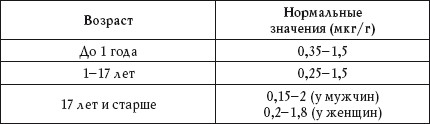
Таблица 93
Нормальные показатели селена в анализе ногтей
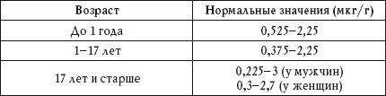
Повышенный показатель
Повышенное содержание селена в анализе волос и ногтей наблюдается при:
• избыточном потреблении селена;
• влиянии производственных факторов;
• использовании шампуней от перхоти, содержащих селен.
Пониженный показатель
Пониженное количество селена в анализе волос и ногтей наблюдается при:
• недостаточном потреблении селена;
• нарушении обмена селена в организме.
Стронций
Стронций присутствует в организме человека в следовом количестве. Его соединения по своим химическим свойствам близки к соединениям кальция, однако они не относятся к жизненно необходимым. Избыточное поступление стронция в организм может вызвать нарушения обмена костной ткани, приводящие к так называемому стронциевому рахиту и некоторым другим заболеваниям.
Результаты исследования
Нормальное содержание стронция при анализе волос – до 10 мкг/г (до 17 лет) и до 20 мкг/г (17 лет и старше), при анализе ногтей – до 15 мгк/г (до 17 лет) и до 30 мкг/г (17 лет и старше).
Повышенный показатель
Повышенное количество стронция в анализе волос и ногтей наблюдается при:
• накоплении стронция в организме;
• нарушении обмена стронция в организме.
Сурьма
Сурьма не является жизненно необходимым элементом. Она широко используется в промышленности и в медицине (для лечения гельминтозов и лейшманиоза).
Токсичность данного элемента зависит от его способа поступления в организм и дозы. Так, прием некоторых препаратов сурьмы может вызвать головную боль, тошноту, рвоту, диарею и спазмы кишечника. Такие же симптомы наблюдаются и при воздействии сурьмы в качестве производственного фактора. Хроническое отравление сурьмой приводит к аритмии, дерматиту, воспалению слизистой дыхательных путей и глаз.
Результаты исследования
Нормальное содержание сурьмы при анализе волос и ногтей – до 0,2 мкг/г.
Отравление препаратами сурьмы при беременности может привести к выкидышу.
Повышенный показатель
Повышенное количество в анализе волос и ногтей наблюдается при хроническом отравлении сурьмой.
Таллий
Таллий не является жизненно необходимым элементом. Он присутствует в организме человека в незначительном количестве. Таллий очень токсичен в повышенной концентрации – к его соединениям относятся крысиный яд и некоторые фунгициды. Сульфат и ацетат таллия используют в некоторых лекарствах, а также в косметике.
Таллий используют в производстве пестицидов.
Результаты исследования
Нормальное содержание таллия при анализе волос и ногтей – до 0,01 мкг/г.
Повышенный показатель
Повышенное количество таллия в анализе волос и ногтей наблюдается при его избыточном поступлении в организм.
Фосфор
Фосфор относится к жизненно необходимым микроэлементам, в основном он содержится в костях.
Результаты исследования
Нормальное содержание фосфора в анализе волос и ногтей приведены в таблицах 94 и 95.
Таблица 94
Нормальные показатели фосфора в анализе волос
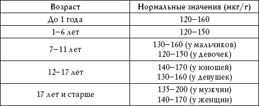
Таблица 95
Нормальные показатели фосфора в анализе ногтей
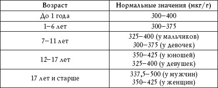
Повышенный показатель
Повышенное количество фосфора в анализе волос и ногтей наблюдается при:
• избыточном приеме фосфатов;
• нарушении функции почек.
Пониженный показатель
Пониженное содержание фосфора в анализе волос и ногтей наблюдается при:
• недостаточном поступлении фосфора с пищей;
• нарушениях пищеварения;
• длительном голодании.
Хром
Хром относится к жизненно необходимым микроэлементам. Его дефицит является одним из факторов, вызывающих нарушение толерантности к глюкозе.
Результаты исследования
Нормальное количество хрома в анализе волос и ногтей приведены в таблицах 96 и 97.
Таблица 96
Нормальные показатели хрома в анализе волос
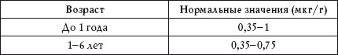
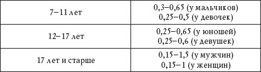
Таблица 97
Нормальные показатели хрома в анализе ногтей
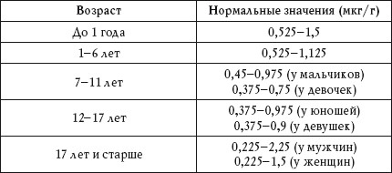
Повышенный показатель
Повышенное содержание хрома в анализе волос и ногтей наблюдается при:
• влиянии профессиональных факторов;
• плохой экологической обстановке;
• дисбалансе минерального обмена;
• приеме пищевых добавок, содержащих хром.
Пониженный показатель
Пониженное количество хрома в анализе волос и ногтей наблюдается при:
• дисбалансе минерального обмена в организме;
• недостаточном поступлении хрома в организм;
• диабете.
Цинк
Цинк относится к жизненно необходимым элементам.
Он входит в состав более 300 металлоферментов, участвует в механизмах развития плода, связан с регуляцией синтеза стероидных, тиреоидных и других гормонов.
Результаты исследования
Нормальное содержание цинка в анализе волос и ногтей приведено в таблицах 98 и 99.
Таблица 98
Нормальные показатели цинка в анализе волос
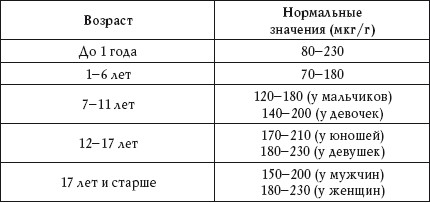
Таблица 99
Нормальные показатели цинка в анализе ногтей
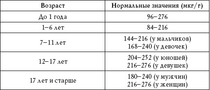
Повышенный показатель
Повышенное количество цинка в анализе волос и ногтей наблюдается при:
• избыточном поступлении цинка в организм;
• нарушении метаболизма цинка;
• использовании косметических средств, содержащих цинк.
Пониженный показатель
Пониженное содержание цинка в анализе волос и ногтей наблюдается при:
• целиакии;
• дефиците в организме белков;
• сахарном диабете;
• недостаточном поступлении цинка в организм;
• исключении из рациона продуктов животного происхождения.